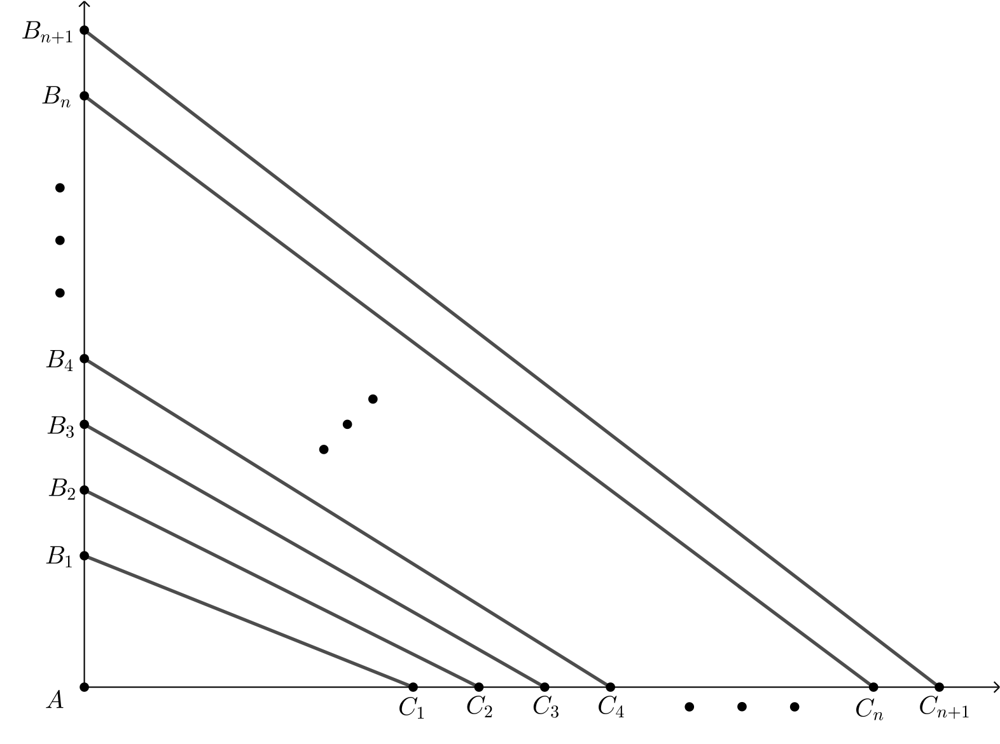

Problem of the Week
Problem E
The Area of the Year
In the diagram, \(\triangle AB_1C_1\) is right-angled with \(AB_1=2\) and \(AC_1=5\). Lines \(AB_1\) and \(AC_1\) are extended and many more points are labelled at intervals of 1 unit, so that
\[B_1B_2=B_2B_3=B_3B_4=B_4B_5=\ \cdots\ =1,\ \text{and}\]
\[C_1C_2=C_2C_3=C_3C_4=C_4C_5=\ \cdots\ =1.\]
In fact, \(B_1B_j=j-1\) and \(C_1C_k=k-1\) for any positive integers \(j\) and \(k\).
For example, \(B_1B_{5}=5-1=4\) and \(C_1C_{4}=4-1=3\).
Determine the value of \(n\) so that the area of quadrilateral \(B_nB_{n+1}C_{n+1}C_n\) is 2020. That is, determine the value of \(n\) so that the area of the quadrilateral with vertices \(B_n\), \(B_{n+1}\), \(C_{n+1}\), and \(C_n\) is 2020.
